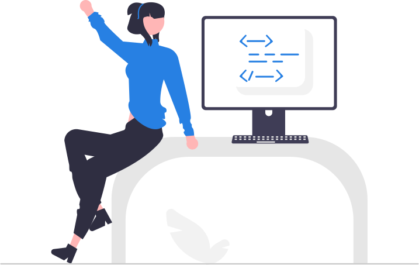

Introduction to R for Social Scientists
A three-day workshop spanning programming, wrangling, visualization, and modeling in R.
Developed by Jeffrey Girard for the Pittsburgh Summer Methodology Series (July 25–27, 2022).

R is a popular software option for analyzing, wrangling, and visualizing data in the social, behavioral, and medical sciences. It is completely free, runs on all major platforms (i.e., Windows, Mac, and Linux), and offers a rich catalog of tools and techniques that are updated frequently. It is an excellent choice for a first programming language (when taught properly) and provides all the computational tools that most social scientists will ever need.
The main hurdle for many social scientists learning R is that it is largely controlled using “syntax” (i.e., computer code) rather than point-and-click menus. This characteristic is actually one of R’s greatest strengths, but can be intimidating to many without a background in computing. This three-day workshop is designed to ease the transition into using R. It aims to provide a solid foundation of conceptual knowledge and applied skills that build the confidence, curiosity, and motivation that will be required to continue learning and using R after the workshop ends.
The workshop assumes that attendees have no prior knowledge of or experience with R, but does assume some knowledge of basic statistical tools (e.g., correlation and regression). Thus, it is best suited for students who have already completed an introductory statistics course (perhaps taught using point-and-click software).
While there are many great educational resources for learning R, including some free video courses and textbooks, this workshop will provide a structured, guided, and communal environment that is tailor-built for researchers in the social, behavioral, and medical sciences. Thus, it emphasizes the concepts and skills most needed by such researchers. In particular, it teaches modern data science techniques using tools from the tidyverse ecosystem (e.g., the dplyr, tidyr, and ggplot2 packages) and statistical techniques using tools from the easystats ecosystem (e.g., the parameters, performance, modelbased, and see packages). The beauty of these tools is that they are both beginner-friendly and scalable to solve more complex problems and interface with more advanced techniques.
These materials may be re-used according to the CC-BY License.